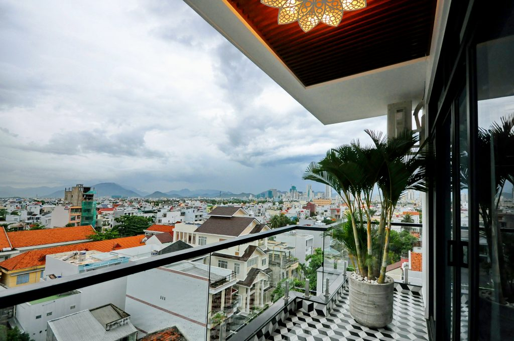
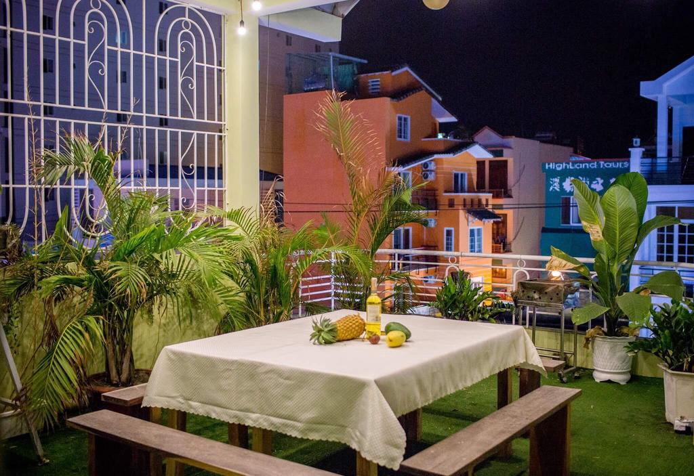
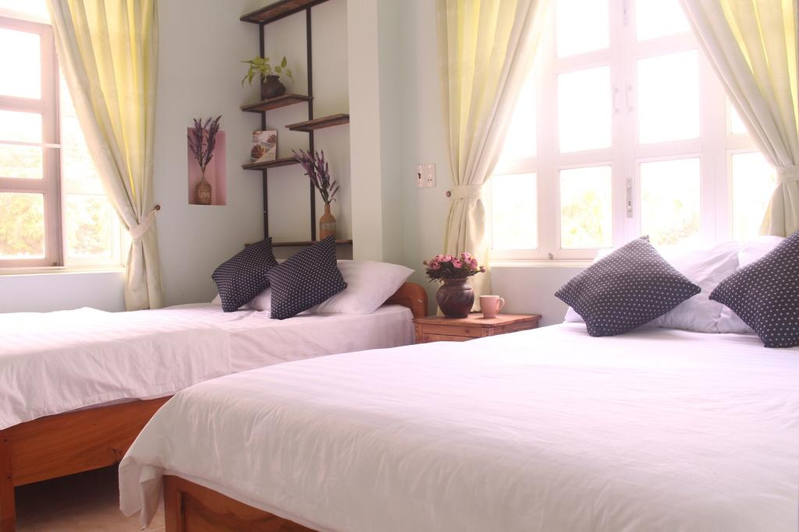
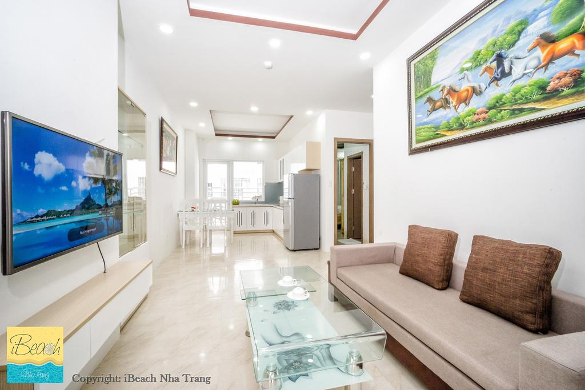
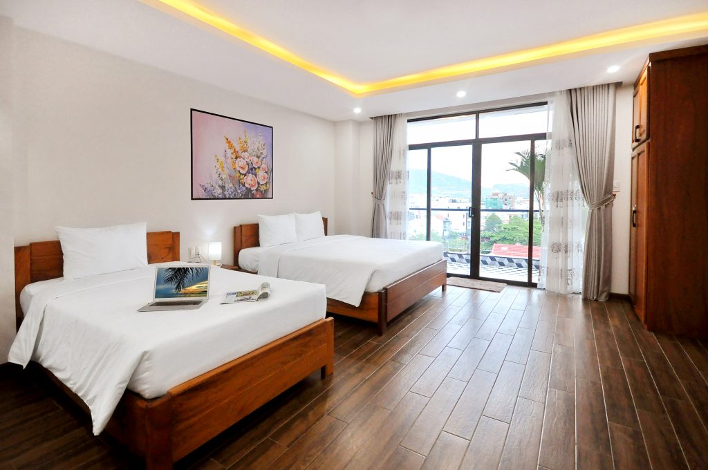
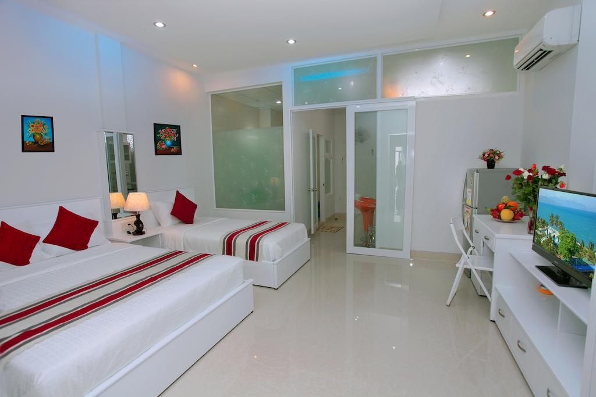

Bật mí kinh nghiệm đặt phòng homestay tại Nha Trang giá rẻ
Hãy tham khảo một số kinh nghiệm đặt phòng homestay tại Nha Trang để lựa chọn được những homestay lý tưởng với mức giá hoàn toàn hợp lý nhé. Nha Trang là một trong nhưng thành phố biển thu hút khách du lịch trong nước cũng như quốc tế. Đến với Nha Trang, du khách sẽ được đắm chìm vào vẻ đẹp của thiên nhiên biển cả. Cũng như khám phá những nét đẹp tiềm ẩn của văn hóa, con người nơi đây. Nếu bạn đã có dự định tới Nha Trang để du lịch và nghỉ dưỡng.
1. Đặt phòng homestay tại Nha Trang sớm để nhận được mức giá hợp lý.
Đặt phòng homestay tại Nha Trang từ sớm để dễ dàng lựa chọn được một căn homestay lý tưởng mà giá cả phải chăng? Với sự phát triển ngành du lịch tại Nha Trang, các homestay tại đây đều phát triển theo đó để phục vụ nhu cầu nghỉ dưỡng của khách du lịch. Nhưng vào mùa du lịch cao điểm tại Nha Trang, tình trạng hết phòng nếu bạn đặt phòng ngay gần ngày khởi hành là không thể tránh khỏi. Bên cạnh đó, việc khan hiếm homestay dẫn tới giá cả tăng lên ngoài dự kiến.

Đặt phòng sớm giúp du khách lựa chọn homestay vừa đẹp vừa rẻ và ở vị trí thuận tiện cho chuyến đi Để tránh khỏi tình trạng đó, bạn nên chủ động đặt phòng homestay tại Nha Trang từ sớm để dễ dàng lựa chọn được một căn homestay lý tưởng mà giá cả phải chăng. Nó cũng giúp bạn dễ dàng lựa chọn được những căn homestay vừa rẻ, vừa đẹp mà không lo hết phòng. Ngoài ra, việc đặt phòng sớm giúp bạn xác định được chỗ nghỉ để từ đó lên được kế hoạch hành trình hợp lý nhất.
2. Chú ý vị trí thực tế của homestay
Nếu bạn muốn đặt phòng homestay tại Nha Trang với mức giá rẻ, bạn cũng nên chú ý tới vị trí thực tế của homestay đó. Bởi thường các “homestay giá rẻ bất ngờ” thường không tập trung nhiều ở vị trí đẹp, trung tâm hay gần biển. Hoặc một số homestay cung cấp thông tin vị trí không thực sự chính xác. Do đó, để xác thực tính chính xác thông tin mà Homestay đó cung cấp. Bạn nên đối chiếu thông tin vị trí với bản đồ thực tế để biết được vị trí chính xác hơn và có lựa chọn phù hợp. Bản đồ vị trí thực tế có dưới thông tin của từng homestay. Ngoài ra, nó cũng giúp bạn xác định được vị trí những địa điểm tham quan du lịch tại Nha Trang để lên một kế hoạch di chuyển thuận tiện nhất.
Bạn nên chú ý vị trí thực tế của homestay để lựa chọn homestay có vị trí thuận tiện nhất
3. Tham khảo đánh giá thực tế từ khách du lịch đã từng ở homestay đó.
Để lựa chọn một căn homestay lý tưởng. Chắc chắn bạn phải nắm rõ được những tiện ích mà homestay ấy đem lại cho bạn. Nhưng với một số homestay giá rẻ, chất lượng phục vụ của nó không được đánh giá cao từ khách du lịch. Bên cạnh đó cũng có những homestay có chất lượng phục vụ rất tốt.
Những đánh giá thực tế của du khách sẽ là ý kiến khách quan cho bạn tham khảo Vậy nên để chắc chắn nắm được chất lượng phòng ở và chất lượng dịch vụ của homestay ấy có đáng thuê hay không. Bạn nên tham khảo các đánh giá thực tế từ các khách du lịch đã từng ở homestay đó nhận xét. Các đánh giá khách quan ấy luôn có sẵn ở trang đặt phòng uy tín như Thuenhadulich.vn. Đó chính là cơ sở tốt nhất để du khách có cái nhìn đa chiều và khách quan nhất để an tâm chọn đặt phòng homestay tại Nha Trang.
4. Lựa chọn phòng tập thể với đoàn du lịch đông người
Tùy theo số lượng người, bạn có thể đặt phòng homestay tại Nha Trang có số lượng phòng phú hợp. Nếu bạn đi theo nhóm du lịch đông người. bạn nên lựa chọn phòng tập thể. Bên cạnh đó với những gia đình có trẻ nhỏ. Bạn cũng có thể tham khảo các chính sách thêm giường cho trẻ em. Như vậy bạn có thể tiết kiệm được hơn so với chọn homestay nhiều phòng đơn.
Đặt phòng homestay tại Nha Trang có không gian rộng giúp du khách có những phút giây gắn bó tình thân Thêm vào đó, đây sẽ là những phút giây để gia đình và người thân của bạn gần gũi và gắn kết bên nhau. Những hoạt động tập thể tại những không gian rộng của homestay sẽ giúp tinh đoàn kết được thắt chặt thêm. Bạn có thể tham khảo và lựa chọn đặt phòng homestay tại Nha Trang giá hợp lý nhất qua một số gợi ý dưới đây.
Homestay IBeach Apartment
Địa chỉ: Chung cư Mường Thanh Viễn Triều – Số 3 Phạm Văn Đồng, Vĩnh Hải, Nha Trang, Khánh Hòa Giá thuê: 660.000 VND / đêm. Homestay IBeach Apartment là căn homestay cao cấp, thuộc tòa Mường Thanh Viễn Triều. Đây là căn hộ lý tưởng mà bạn không nên bỏ qua khi có nhu cầu đặt phòng homestay tại Nha Trang. Homestay này cung cấp cho khách du lịch 2 phòng ngủ cao cấp với nhiều tiện ích vượt trội. Phòng khách với nội thất sang trọng và hiện đại. IBeach Apartment còn có bể bơi ngoài trời để du khách thư giãn và bơi lội. Khu dịch vụ Spa & chăm sóc sức khỏe cũng có sẵn dành cho du khách có nhu cầu sử dụng dịch vụ.
Không gian phòng khách thoáng đãng sạch sẽ cho bạn một không gian nghỉ ngơi tuyệt vời Tất cả sẽ đem đến cho du khách một không gian sống đầy mới lạ và thoải mái nhất. Từ Homestay bạn cũng dễ dàng di chuyển tới các địa điểm tham quan nổi tiếng ở Nha Trang. Chuyến du lịch và nghỉ dưỡng tại Nha Trang của bạn sẽ thật thuận tiện khi bạn lựa chọn Homestay IBeach Apartment.
Homestay Lena Apartment
Địa chỉ: Số 8 Tản Đà, P.Phước Long, Nha Trang, Khánh Hòa Giá thuê: 650.000 VND / đêm. Với những du khách muốn tìm đặt phòng homestay tại Nha Trang. Ắt hẳn lựa chọn homestay gần biển luôn là ưu tiên hàng đầu. Homestay Lena Apartment là homestay có vị trí gần biển, không gian nghỉ dưỡng yên tĩnh với những tiện nghi hiện đại. Nơi đây được nhiều du khách ưa chuộng và đánh giá cao về chất lượng của nó. Homestay Lena Apartment có mức giá vô cùng hợp lý. Nhưng chất lượng căn hộ sẽ khiến mọi du khách phải bất ngờ với những tiện nghi vượt trội của nó.
Phòng ngủ tinh tế và sang trọng của Lena Homestay Homestay này thích hợp cho 3 người ở. Phòng ngủ có giường nệm êm ái, giúp bạn ngủ ngon và thoải mái như đang ở chính ngôi nhà của mình. Ban công rộng, thoáng gió, hướng thành phố Nha Trang đẹp hút hồn. Từ đây, bạn có thể tận hưởng làn gió mát lành của miền biển. Thiết kế căn hộ nhẹ nhàng nhưng ẩn chứa những vẻ đẹp thu hút người ở. Một căn hộ tuyệt vời như vậy sẽ khiến bất cứ du khách nào nghỉ dưỡng tại đây đều không nỡ rời đi.
Homestay An Phú Gia
Địa chỉ: 132/6 Hùng Vương, phường Lộc Thọ, Nha Trang, Khánh Hòa Giá thuê: 500.000 VND / đêm. Homestay An Phú Gia là chỗ nghỉ lý tưởng dành cho 3 khách du lịch. Nơi đây ở vị trí đắc địa và giá cả lại vô cùng rẻ. Vừa gần biển, gần trung tâm thành phố và các địa điểm mua sắm. Việc tham quan và mua sắm của bạn sẽ vô cùng dễ dàng khi lựa chọn Homestay An Phú Gia. Đặt phòng Homestay này sẽ có 1 giường đôi và 1 giường đơn êm ái và thoải mái cho du khách nghỉ ngơi. Không gian căn hộ thoáng mát và sạch sẽ. Các tiện nghi và vật dụng gia đình đều được trang bị đầy đủ và hiện đại.
Homestay An Phú Gia sẽ mang cho bạn không gian nghỉ dưỡng thoái mái nhất Bên cạnh đó, Homestay An Phú Gia còn tích hợp một số dịch vụ phục vụ nhu cầu nghỉ dưỡng thêm phần hoàn hảo hơn. Các dịch vụ chăm sóc sức khỏe, tắm suối nước nóng cùng nhiều hoạt động du lịch, thể thao hấp dẫn khác giúp kì nghỉ của bạn thêm phần thú vị hơn. Nó sẽ mang cho người ở thêm tiện nghi sang trọng cho một chuyến nghỉ dưỡng đáng nhớ.